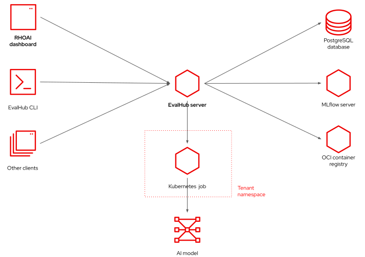

EvalHub Architecture and CLI
- Objective
-
Describe the architecture of EvalHub and explain how to enable, access, and use its CLI with Red Hat OpenShift AI.
| Work In Progress |
Architecture of EvalHub
The architecture of EvalHub is similar to that of Kubernetes controllers and operators in the sense that it manages and observes evaluation runs which are ultimately implemented as Kubernetes jobs.

EvalHub offers its own API for managing and querying the state of evaluation runs instead of using Kubernetes custom resources. This makes EvalHub easier for AI engineers and software developers not experienced with Kubernetes. It also enables the community to deploy and use EvalHub by itself, outside of Kubernetes.
| Standalone deployments of EvalHub are not supported by Red Hat OpenShift AI. |
A client uses the EvalHub API to submit requests to create and query the state of evaluation runs, evaluation providers, and collections. The RHOAI dashboard acts an an EvalHub client, and there is an EvalHub CLI tool included with the EvalHub SDK for Python. Among other potential clients for the EvalHub server are Jupyter notebooks and KubeFlow pipelines.
The EvalHub server uses a PostgreSQL database to store the state of evaluation runs, including their metrics and pointers to the optional MLflow experiment and OCI container image which also store their evaluation results.
EvalHub and TrustyAI in RHOAI
There is no EvalHub operator in RHOAI. The TrustyAI operator manages EvalHub servers in RHOAI. The TrustyAI operator, in turn, is managed by the RHOAI operator. Consequently, the the TustyAI and EvalHub operators are not visible from the Operator Lifecycle Manager (OLM).
To deploy an EvalHub server, you must perform two actions:
-
Edit the singleton data science cluster resource of your RHOAI instance to enable the TrustyAI operator by setting its
spec.components.trustyai.managementStatefield toManaged. -
Create an EvalHub resource, which configures the database, MLflow server, and optional OCI container registry associated with the EvalHub server.
Once the EvalHub resource is available, the page of the RHOAI dashboard becomes functional and exibits the Create new evaluation buttopn.
|
Contrary to the note on the RHOAI 3.4 product docs, you must create your EvalHub resource in the If you create your EvalHub resource in any other namespace, you cannot use the RHOAI dashboard to manage evaluations, but you can still use the EvalHub SDK and its CLI. |
If you install EvalHub in the standard namespace for RHOAI applications, as recommended, you must set the TrustyAI label in any project where you run evaluations:
evalhub.trustyai.opendatahub.io/tenant
Without that label, network policies would prevent pods in the project, including pods from Kubernetes jobs created by EvalHub itself to run evaluations, from connecting to the EvalHub server. It doesn’t matter the value assigned to the label. Only its key is necessary.
EvalHub tenants and authentication within OpenShift
The EvalHub operator maps Kubernetes namespaces and OpenShift projects (not just AI projects) to EvalHub tenants. For each project in RHOAI, there is an EvalHub tenant.
The EvalHub operator also configures the EvalHub server to delegate authentication and authorization to OpenShift. Any OpenShift user is a valid EvalHub user. Such users have access to EvalHub tenants and their evaluation runs based on their RBAC permissions from the respective OpenShift project.
Service accounts also get access to EvalHub, so pods running in OpenShift can access the EvalHub server in RHOAI. These pods include Jupyter Labs notebooks and KubeFlow pipeline tasks.
If you must connect to EvalHub from an application running outside of its OpenShift cluster, for example the EvalHub CLI, you can take the same user token you would use for access to Kubernetes APIs and use it to authenticate to the EvalHub server.
Installing the EvalHub CLI
The EvalHub CLI is provided as part of the EvalHub SDK, which is a Python library. The recommended approach is creating a Python virtual environment and installing the EvalHub SDK and CLI inside it.
Once you have the evalhub command available on your shell, you must use the evalhub configure command to set the URL of the EvalHub server, the tenant, and authentication token so you can create and manage evaluation runs.